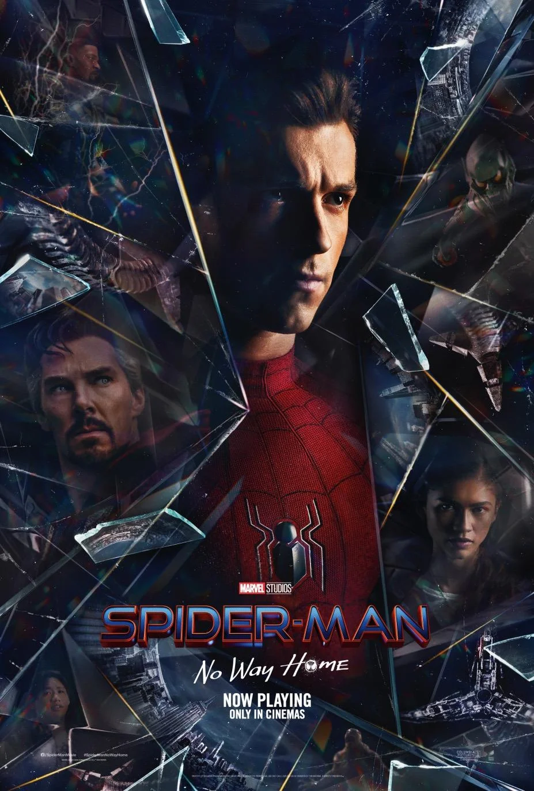

SPIDER-MAN: NO WAY HOME
Cast : Tom Holland, Zendaya, Tobey Maguire, Andrew Garfield, Willem Dafoe, and Jacob Batalon.
Age Restriction : 18
In Cinemas 10th - June- 2022
Synopsis
One week after Quentin Beck's attacks in Europe and subsequent framing of Spider-Man for his murder, Spider-Man's civilian identity as Peter Parker is revealed to the world. Parker and MJ flee to his apartment, reuniting with his aunt May and Happy Hogan. With the apartment surrounded by the Department of Damage Control, Parker, MJ, Aunt May, and Ned Leeds are interrogated but ultimately released without charge with Peter's name being eventually cleared with the help of Matt Murdock. Parker, MJ, and Leeds return to high school but their university applications are rejected due to the recent controversy.Parker consults with Stephen Strange in the Sanctum Sanctorum, asking him to cast a spell to make people forget he is Spider-Man. Despite Wong's warning of the consequences that could be incurred, Strange casts the spell anyway. However, the spell is damaged when Peter's constantly changing requirements destabilize it. Strange then berates Peter, after finding out that Peter didn't even try to contact the MIT acceptance board before coming to him to request a potentially universe-ending spell. Parker goes to the Alexander Hamilton Bridge and tries to convince an MIT administrator to accept Leeds' and MJ's applications. Suddenly, the bridge is attacked by Otto Octavius, who rips Parker's nanotechnology from his Iron Spider suit, causing it to bond with his mechanical tentacles. Upon discovering that this isn't the Peter Parker he had previously fought, Octavius has his robotic arms disabled by the nanotechnology, before being captured and placed in a holding cell in the Sanctum Sanctorum, along with Curt Connors who has been captured by Strange. Strange reveals that his spell has begun bringing everybody from every part of the multiverse who knows Peter Parker is Spider-Man into their world. With the help of MJ and Leeds, Parker decides to help capture any other possible "visitors". They find and capture Max Dillon and Flint Marko.
Elsewhere, Norman Osborn is retrieved after going to a F.E.A.S.T. building seeking help. Strange wants to send the villains back to their respective universes and meet their fates. However, Parker wants to cure and help them before sending them back in order to prevent their fated deaths. He frees them and confines Strange in the Mirror Dimension after a brief fight, taking the villains to Happy's apartment. Parker successfully cures Octavius by using Stark Industries technology to replace his broken inhibitor chip. When cures are developed for Osborn and Dillon, the Green Goblin persona takes over Osborn before the cure can be administered. Goblin then manipulates Dillon into removing the device that Parker put on him to cure him and, despite the best efforts of Parker and Octavius, the other four escape. In the ensuing battle, May is critically injured by the Goblin, with Parker unable to save her as she succumbs to her wounds. MJ and Leeds accidentally learn how to open portals using Strange's sling ring, which they use in an attempt to find Parker, but instead summon an alternate Peter Parker from a different universe. A second attempt brings through another alternative. Leeds and MJ find their Parker who is comforted by MJ, after learning of May's death. He then meets the other Spider-Men, who share their own stories of losing loved ones and encourage him to fight in May's honor. They cooperate on curing the remaining villains and lure them to the Statue of Liberty. Leeds and MJ protect the original bind spell by Strange as the Spider-Men battle their enemies together. As the three Spider-Men struggle, they decide to plan a coordinated attack on the villains. They are later joined by Octavius, and they manage to defeat and cure Connors, Dillon, and Marko after a lengthy battle with Dillon reconciling with his universe's Spiderman and is encouraged to abandon his villainous tendencies.
Leeds accidentally frees Strange from the Mirror Dimension, who seizes control of the spell and works to protect the current universe as the barriers begin to break down between the other universes. Meanwhile, an enraged Parker fights and overpowers the Goblin, intending to kill him in vengeance for May's death, but he is stopped short by the Parker from Goblin's universe, only for the latter to be stabbed from behind by the Goblin. Parker then injects Goblin with the cure, restoring him to a regretful Osborn. Peter and MJ confess their love for each other and share a passionate kiss before the spell officially starts. To prevent further catastrophe and at Parker's request, Strange fixes the spell, sending the alternate Spider-Men and their villains back to their respective universes, while making everyone forget Parker's existence. Later, Parker tries to reintroduce himself to MJ and Leeds, but finds himself unable to do it. Parker visits May's grave, joined by Happy, now oblivious to his identity, and vows to carry on. Parker creates a new suit from scratch to resume his independent heroics. In a mid-credits scene, the universe-displaced Eddie Brock and his symbiote companion Venom sit at a bar and talk with the bartender about other super-humans and the Blip. While pondering how to "protect" this new world, the duo is swiftly transported back to their universe by Strange's spell, unknowingly leaving a part of the symbiote on the counter.